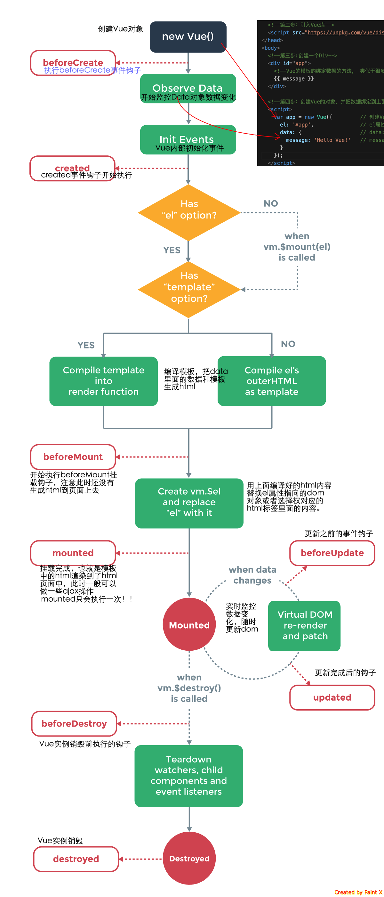

Vue实例详解与生命周期
Vue的实例是Vue框架的入口，其实也就是前端的ViewModel，它包含了页面中的业务逻辑处理、数据模型等，当然它也有自己的一系列的生命周期的事件钩子，辅助我们进行对整个Vue实例生成、编译、挂着、销毁等过程进行js控制。
Vue实例初始化的选项配置对象详解
前面我们已经用了很多次 new Vue({...})的代码，而且Vue初始化的选项都已经用了data、methods、el、computedd等,估计您看到这里时，应该已经都明白了他们的作用，我们就详细讲解一下他们的使用情况。更详细的请参考官网内容
Vue实例的的data对象
- 介绍
Vue的实例的数据对象data 我们已经用了很多了，数据绑定离不开data里面的数据。也是Vue的核心属性。 它是Vue绑定数据到HTML标签的数据源泉，另外Vue框架会自动监视data里面的数据变化，自动更新数据到HTML标签上去。本质原理是：Vue会自动将data里面的数据进行递归抓换成getter和setter，然后就可以自动更新HTML标签了，当然用getter和setter所以老的浏览器Vue支持的不够好。
data对象的类型：
- 类型是Object或者Function。
- 如果是组件对象中，data必须是Function类型。【后面学了组件后就明白了，暂时对组件先放放。】
实例：
// 创建普通的Vue实例
var vm = new Vue({
data: data
})
// 组件定义【后面会详细讲的】
// Vue.extend() 中 data 必须是函数
var Component = Vue.extend({
data: function () { //这里必须是函数！！！！
return { a: 1 }
}
})
Vue实例的computed
- 介绍
Vue的计算属性（computed)的属性会自动混入Vue的实例中。所有 getter 和 setter 的 this 上下文自动地绑定为 Vue 实例。这就很强大了，再计算属性中定义的函数里面可以直接使用指向了vue实例的this，异常方便的啊。
- 类型
{ 键：函数}
{ [key: string]: Function | { get: Function, set: Function } }
当然，可以省略setter,如果省略了setter，那么值就可以是普通函数，但是必须有返回值。
- 官方的实例
var vm = new Vue({ data: { a: 1 }, computed: { // 仅读取，值只须为函数 aDouble: function () { return this.a * 2 }, // 读取和设置 aPlus: { get: function () { return this.a + 1 }, set: function (v) { this.a = v - 1 } } } }) vm.aPlus // -> 2 vm.aPlus = 3 vm.a // -> 2 vm.aDouble // -> 4
methods
类型: { [key: string]: Function }
详细:
methods 将被混入到 Vue 实例中。可以直接通过 VM 实例访问这些方法，或者在指令表达式中使用。方法中的 this 自动绑定为 Vue 实例。
注意，不应该使用箭头函数来定义 method 函数 (例如 plus: () => this.a++)。理由是箭头函数绑定了父级作用域的上下文，所以 this 将不会按照期望指向 Vue 实例，this.a 将是 undefined。
- 示例:
var vm = new Vue({
data: { a: 1 },
methods: {
plus: function () {
this.a++
}
}
})
vm.plus()
vm.a // 2
watch
- 类型
{ [key: string]: string | Function | Object }
- 详细:
一个对象，键是需要观察的表达式，值是对应回调函数。值也可以是方法名，或者包含选项的对象。Vue 实例将会在实例化时调用 $watch()，遍历 watch 对象的每一个属性。
- 示例:
var vm = new Vue({
data: {
a: 1,
b: 2,
c: 3
},
watch: {
// 监控a变量变化的时候，自动执行此函数
a: function (val, oldVal) {
console.log('new: %s, old: %s', val, oldVal)
},
// 深度 watcher
c: {
handler: function (val, oldVal) { /* ... */ },
deep: true
}
}
})
vm.a = 2 // -> new: 2, old: 1
//注意，不应该使用箭头函数来定义 watcher 函数 (例如 searchQuery: newValue => this.updateAutocomplete(newValue))。理由是箭头函数绑定了父级作用域的上下文，所以 this 将不会按照期望指向 Vue 实例，this.updateAutocomplete 将是 undefined。
参考综合案例：
<!DOCTYPE html>
<html lang="en">
<head>
<meta charset="UTF-8">
<title>Vue入门之数据监控</title>
<script src="https://unpkg.com/vue/dist/vue.js"></script>
</head>
<body>
<div id="app">
<p>{{ number }}</p>
<input type="button" name="btnGetNumber" value="增加" v-on:click="getNumber()">
</div>
<script>
var app = new Vue({
el: '#app',
data: {
number: 1
},
methods: {
// 事件响应方法的逻辑代码
getNumber: function (e) {
this.number += 1; // 不管是内联方法调用，还是绑定事件处理器两种方式执行事件响应方法的时候 this都是指向 app
}
},
watch: {
// 监控number的变化，并自动执行下面的函数
number: function (val, oldVal) {
console.log('val:' + val + ' - oldVal: ' + oldVal);
}
}
});
</script>
</body>
</html>
设置el的详解
- 类型
string | HTMLElement
限制： 只在由 new 创建的实例中遵守。
- 详细：
提供一个在页面上已存在的 DOM 元素作为 Vue 实例的挂载目标,也就是说Vue绑定数据到哪里去找。可以是CSS 选择器，也可以是一个 HTMLElement实例。
在实例挂载之后(生命周期的内容后面会详细讲的奥)， 元素可以用 vm.$el 访问。
如果这个选项在实例化时有作用，实例将立即进入编译过程，否则，需要显式调用 vm.$mount() 手动开启编译。
// 几乎所有例子都用到这个，所以就不再赘述
var app = new Vue({
el: '#app',
...
});
Vue实例的生命周期
Vue实例有一个完整的生命周期，也就是从开始创建、初始化数据、编译模板、挂载Dom、渲染→更新→渲染、卸载等一系列过程，我们称这是Vue的生命周期。通俗说就是Vue实例从创建到销毁的过程，就是生命周期。
在Vue的整个生命周期中，它提供了一系列的事件，可以让我们注册js方法，可以让我们达到控制整个过程的目的地，哇赛，如果你搞过Asp.Net WebForm的话，你会发现整个就是WebForm的翻版嘛哈哈。值得注意的是，在这些事件响应方法中的this直接指向的是vue的实例。
首先看看下面官网的一张生命周期的图，我做一下标注，看看整体的流程，后面我们上代码做一下效果。

Vue提供的可以注册的钩子都在上图片的红色框标注。 他们是：
beforeCreate
在实例初始化之后，数据观测(data observer) 和 event/watcher 事件配置之前被调用。
created
实例已经创建完成之后被调用。在这一步，实例已完成以下的配置：数据观测(data observer)，属性和方法的运算， watch/event 事件回调。然而，挂载阶段还没开始，$el 属性目前不可见。
beforeMount
在挂载开始之前被调用：相关的 render 函数首次被调用。
mounted
el 被新创建的 vm.$el 替换，并挂载到实例上去之后调用该钩子。如果 root 实例挂载了一个文档内元素，当 mounted 被调用时 vm.$el 也在文档内。
beforeUpdate
数据更新时调用，发生在虚拟 DOM 重新渲染和打补丁之前。 你可以在这个钩子中进一步地更改状态，这不会触发附加的重渲染过程。
updated
由于数据更改导致的虚拟 DOM 重新渲染和打补丁，在这之后会调用该钩子。
当这个钩子被调用时，组件 DOM 已经更新，所以你现在可以执行依赖于 DOM 的操作。然而在大多数情况下，你应该避免在此期间更改状态，因为这可能会导致更新无限循环。
该钩子在服务器端渲染期间不被调用。
beforeDestroy
实例销毁之前调用。在这一步，实例仍然完全可用。
destroyed
Vue 实例销毁后调用。调用后，Vue 实例指示的所有东西都会解绑定，所有的事件监听器会被移除，所有的子实例也会被销毁。 该钩子在服务器端渲染期间不被调用。
接下来我们做一个例子，看一下Vue中所有的生命周期怎么用的。
<!DOCTYPE html>
<html lang="en">
<head>
<meta charset="UTF-8">
<title>Vue入门之生命周期</title>
<script src="https://unpkg.com/vue/dist/vue.js"></script>
</head>
<body>
<div id="app">
<p>{{ number }}</p>
<input type="text" name="btnSetNumber" v-model="number">
</div>
<script>
var app = new Vue({
el: '#app',
data: {
number: 1
},
beforeCreate: function () {
console.log('beforeCreate 钩子执行...');
console.log(this.number)
},
cteated: function () {
console.log('cteated 钩子执行...');
console.log(this.number)
},
beforeMount: function () {
console.log('beforeMount 钩子执行...');
console.log(this.number)
},
mounted: function () {
console.log('mounted 钩子执行...');
console.log(this.number)
},
beforeUpdate: function () {
console.log('beforeUpdate 钩子执行...');
console.log(this.number)
},
updated: function () {
console.log('updated 钩子执行...');
console.log(this.number)
},
beforeDestroy: function () {
console.log('beforeDestroy 钩子执行...');
console.log(this.number)
},
destroyed: function () {
console.log('destroyed 钩子执行...');
console.log(this.number)
},
});
</script>
</body>
</html>
再看一个综合的实战的例子，可能涉及到ajax和组件，不过先看一下vue的生命周期的例子的用法：
import Axios from 'axios' // 这是一个轻量级的ajax库，import是es6模块导入的语法。
export default { // 这是一个vue的模块，后面讲奥。
name: 'app',
components: {
},
data: function () {
return {
list: []
}
},
mounted: function () { // 挂在完成后的生命周期钩子注册。
this.$nextTick(function () { // 等待下一次更新完成后执行业务处理代码。
Axios.get('/api/menulist', {// 将回调延迟到下次 DOM 更新循环之后执行。在修改数据之后立即使用它，然后等待 DOM 更新
params: {
}
}).then(function (res) {
this.list = res.data
}.bind(this))
})
}
}
Vue实例的全局配置
这一块都是一些小的知识点，我就不赘述了，直接copy 官网 Vue.config 是一个对象，包含 Vue 的全局配置。可以在启动应用之前修改下列属性：
silent
类型： boolean
默认值： false
用法：
Vue.config.silent = true //取消 Vue 所有的日志与警告。
optionMergeStrategies
类型： { [key: string]: Function }
默认值： {}
用法：
Vue.config.optionMergeStrategies._my_option = function (parent, child, vm) { return child + 1 } const Profile = Vue.extend({ _my_option: 1 }) // Profile.options._my_option = 2 //自定义合并策略的选项。 //合并策略选项分别接受第一个参数作为父实例，第二个参数为子实例，Vue实例上下文被作为第三个参数传入。
devtools
类型： boolean
默认值： true (生产版为 false)
用法：
// 务必在加载 Vue 之后，立即同步设置以下内容 Vue.config.devtools = true //配置是否允许 vue-devtools 检查代码。开发版本默认为 true，生产版本默认为 false。生产版本设为 true 可以启用检查。
errorHandler
类型： Function
默认值： 默认抛出错误
用法：
Vue.config.errorHandler = function (err, vm) { // handle error } //指定组件的渲染和观察期间未捕获错误的处理函数。这个处理函数被调用时，可获取错误信息和 Vue 实例。 //Sentry, an error tracking service, provides official integration using this option.
ignoredElements
类型: Array
默认值: []
用法:
Vue.config.ignoredElements = [ 'my-custom-web-component', 'another-web-component' ] 须使 Vue 忽略在 Vue 之外的自定义元素 (e.g., 使用了 Web Components APIs)。否则，它会假设你忘记注册全局组件或者拼错了组件名称，从而抛出一个关于 Unknown custom element 的警告。
keyCodes
类型： { [key: string]: number | Array
} 默认值： {}
用法：
Vue.config.keyCodes = { v: 86, f1: 112, mediaPlayPause: 179, up: [38, 87] } //给 v-on 自定义键位别名。
Vue的全局API
Vue的全局API提供大量的功能，我这里就给大家罗列几个常用的结果，其他的还是参考官网.
Vue.nextTick
语法： Vue.nextTick( [callback, context] )
参数：
{Function} [callback]
{Object} [context]
用法： 在下次 DOM 更新循环结束之后执行延迟回调。在修改数据之后立即使用这个方法，获取更新后的 DOM。
// 修改数据
vm.msg = 'Hello'
// DOM 还没有更新
Vue.nextTick(function () {
// DOM 更新了
})
Vue.set
语法： Vue.set( object, key, value )
参数：
{Object} object
{string} key
{any} value
返回值： 设置的值.
用法：
设置对象的属性。如果对象是响应式的，确保属性被创建后也是响应式的，同时触发视图更新。这个方法主要用于避开 Vue 不能检测属性被添加的限制。
注意对象不能是 Vue 实例，或者 Vue 实例的根数据对象。
Vue.compile
语法：
Vue.compile( template )参数：
{string} template
- 用法： ```js //在render函数中编译模板字符串。只在独立构建时有效
var res = Vue.compile('
全局API总结
其实还有几个其他的全局API，不打算在这里讲了，比如扩展组件Vue.extend 的用法、Vue.use加载插件、Vue.filter加载过滤器、Vue.directive自定义指令等 后面再讲其他Vue的知识点的时候，再加上这些，全局API其实就是Vue类型的静态方法，全局范围内都可以使用的，某些实例的方法本质也是调用了这些全局的，后面用到时候再说。
Vue实例与生命周期总结
Vue的实例封装的还是挺有艺术性的，很符合开发者的思维规范，它的生命周期也非常清晰，使用起来也非常方便。Vue确实一个好框架。